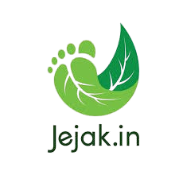
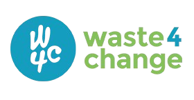
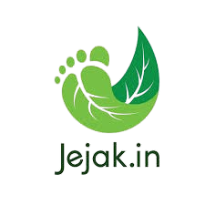
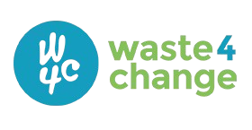

“Sampah Bukan Hanya Masalah. Ini Krisis yang Harus Kita Hadapi Bersama.”
Inilah mimpi kami di PELITA (Pelindung Lingkungan Kita). Di dekade aksi ini, kami berharap dapat menghadirkan perubahan nyata bagi masyarakat Indonesia mendorong kebiasaan pengelolaan sampah yang lebih bijak, peningkatan kepedulian reboisasi, serta membantu mempercepat transisi Indonesia menuju pola hidup yang bertanggung jawab terhadap lingkungan.


Melalui program-program ini, kami ingin memberdayakan generasi muda, memperkuat komunitas, dan membangun kebiasaan yang lebih peduli lingkungan di seluruh Indonesia.
Merespons laporan sampah liar dari masyarakat (via WA) dengan aksi pembersihan yang cepat dan terkoordinasi.
Memulihkan lahan kritis dan area pasca-pembersihan melalui program penanaman pohon yang berkelanjutan.
Menggalang pendanaan publik (donasi) dan edukasi untuk mendukung semua operasional pembersihan dan penanaman.
Kami berperan sebagai pusat informasi dan penggerak kegiatan lingkungan, menghadirkan berbagai program yang berfokus pada edukasi, pelestarian alam, dan pengelolaan sampah. Kami menjalankan inisiatif yang mendorong perubahan perilaku masyarakat menuju hidup yang lebih bersih, sehat, dan berkelanjutan.
Lihat selengkapnyaBersama masyarakat, kami membangun perubahan yang lebih hijau, lebih bersih, dan berkelanjutan.
Kg Sampah terkumpul
Lokasi Dibersihkan
Laporan Terverifikasi
Mitra Komunitas Terlibat

Aksi Bersih Sungai “Pelita River Cleanup Day”
Penanaman 500 Bibit Pohon di Area Perkotaan
Kolaborasi Riset Lingkungan dengan Bappenas
Laporkan titik sampah, pencemaran, atau kerusakan alam melalui WhatsApp. Kami akan menindaklanjuti laporan Anda dengan aksi pembersihan di lapangan.
Setiap rupiah membantu tim membersihkan sampah, mengelola limbah dengan benar, dan menanam pohon baru di area kritis.
Ayo Donasi

 


